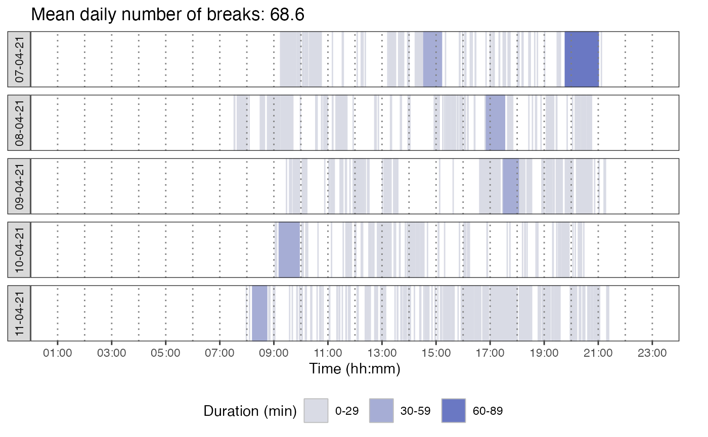
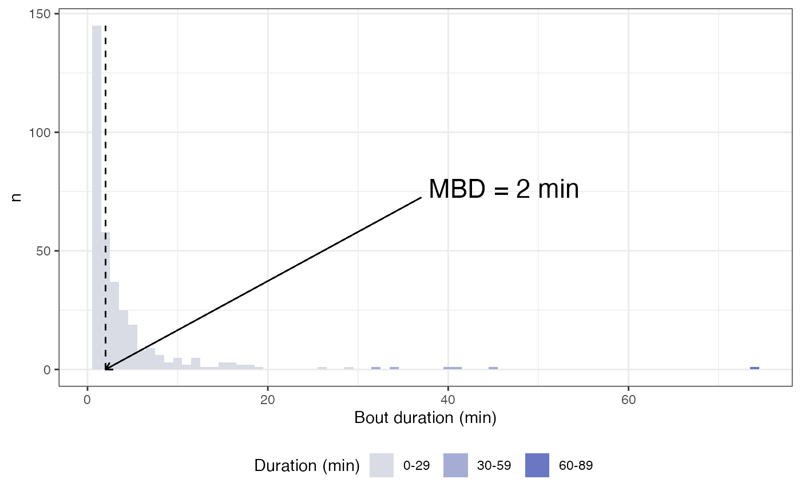
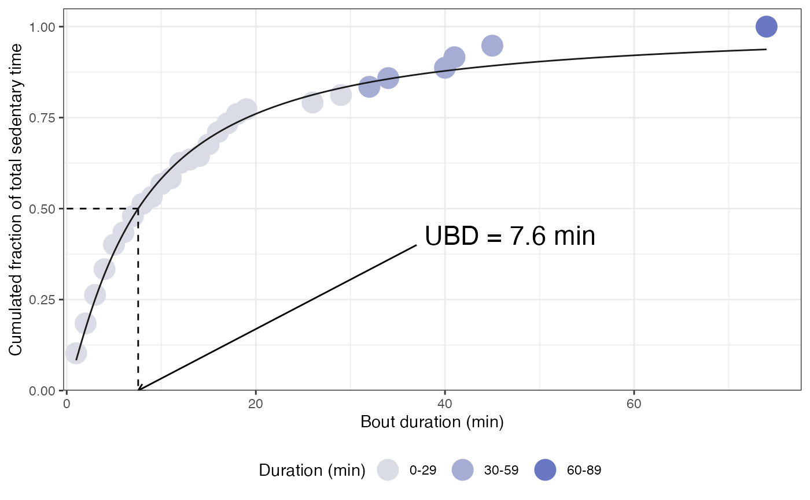

Compute activity accumulation metrics
Source:R/compute_accumulation_metrics.R
compute_accumulation_metrics.RdThis function computes metrics that summarise the pattern of accumulation of either sedentary behaviour or physical activity (depending on the configuration of the function) over time:
mean_breaks: mean daily number of transitions from a sedentary bout to a physical activity bout (or from a physical activity bout to a sedentary bout); this actually corresponds to the mean daily total number of sedentary (or physical activity) bouts detected.
alpha: provides information on the relative proportion of short and long bouts. The higher the alpha coefficient, the more the individual tends to accumulate sedentary (or physical activity) time using relatively short bouts. Alpha is computed using all the bouts of the days and periods of the day considered for analysis. Alpha is computed using the following equation provided by Chastin et al. (2010; doi: 10.1016/j.gaitpost.2009.09.002): \(\alpha = 1 + n \left[\sum_{i = 1}^{n}{ln}\frac{x_{i}}{x_{min}}\right]^{-1}\), with \(n\) the total number of bouts, \(x_{i}\) the duration of the bout \(i\), and \(x_{min}\) the shortest recorded bout duration.
median bout duration (MBD): refers to the median sedentary (or physical activity) bout duration. MBD is computed using all the bouts of the days and periods of the day considered for analysis.
usual bout duration (UBD): refers to the bout duration under/above which 50% of sedentary (or physical activity) time is accumulated. UBD is computed using all the bouts of the days and periods of the day considered for analysis. UBD is determined as described in Belletiere al. (2017; doi:10.1371/journal.pone.0180119) supplementary file 1. More precisely, UBD is found using non-linear regression with the following model: \(y = \frac{t^n}{t^n + UBD^n}\), with \(t\) the bout duration, \(n\) a free parameter, and \(y\) the fraction of total time accumulated in bouts \(\le\) \(t\).
Gini index: provides information on the equality with which bout durations contribute to total sedentary (or physical activity) time. A value of 1 reveals perfect inequality, and a value of 0 reveals perfect equality. Gini index is computed using all the bouts of the days and periods of the day considered for analysis. Gini index is computed following the procedure described at the following link: https://www.statology.org/gini-coefficient-excel/. This method provides similar results as the frequency method implemented in the
Ginifunction from theDescToolsR package.
The appearance of the graphics generated by the function has been inspired by the supplementary file provided by Belletiere al. (2017; doi:10.1371/journal.pone.0180119).
Usage
compute_accumulation_metrics(
data,
col_time = "time",
col_cat_int = "intensity_category",
behaviour = c("sed", "pa"),
dates = NULL,
valid_wear_time_start = "00:00:00",
valid_wear_time_end = "23:59:59",
zoom_from = "00:00:00",
zoom_to = "23:59:59"
)Arguments
- data
A dataframe obtained using the
prepare_dataset,mark_wear_time, and then themark_intensityfunctions.- col_time
A character value to indicate the name of the variable containing time data.
- col_cat_int
A character value indicating the name of the variable where intensity category (SED, LPA, MVPA) is provided.
- behaviour
A character value indicating whether metrics should be computed for sedentary behaviour or physical activity.
- dates
A character vector containing the dates to be retained for analysis. The dates must be with the "YYYY-MM-DD" format. Default is NULL.
- valid_wear_time_start
A character value with the HH:MM:SS format to set the start of the daily period that will be considered for computing metrics.
- valid_wear_time_end
A character value with the HH:MM:SS format to set the end of the daily period that will be considered for computing metrics.
- zoom_from
A character value with the HH:MM:SS format to set the start of the daily period to visualize regarding the daily breaks.
- zoom_to
A character value with the HH:MM:SS format to set the end of the daily period to visualize regarding the daily breaks.
Value
A list of numeric and graphic objects related to mean daily total breaks, alpha, MBD, UBD and Gini index. The list also contains
the processed datasets that were used to provide these metrics: recap_bouts_by_day used to compute mean_break, recap_bouts used
to compute alpha and MBD, summarised_bouts used to compute UBD, and summarised_bouts2 used to compute Gini index.
Examples
# \donttest{
file <- system.file("extdata", "acc.agd", package = "activAnalyzer")
mydata <- prepare_dataset(data = file)
mydata_with_wear_marks <- mark_wear_time(
dataset = mydata,
TS = "TimeStamp",
to_epoch = 60,
cts = "vm",
frame = 90,
allowanceFrame = 2,
streamFrame = 30
)
#> frame is 90
#> streamFrame is 30
#> allowanceFrame is 2
mydata_with_intensity_marks <- mark_intensity(
data = mydata_with_wear_marks,
col_axis = "vm",
equation = "Sasaki et al. (2011) [Adults]",
sed_cutpoint = 200,
mpa_cutpoint = 2690,
vpa_cutpoint = 6167,
age = 32,
weight = 67,
sex = "male",
)
#> You have computed intensity metrics with the mark_intensity() function using the following inputs:
#> axis = vm
#> sed_cutpoint = 200 counts/min
#> mpa_cutpoint = 2690 counts/min
#> vpa_cutpoint = 6167 counts/min
#> equation = Sasaki et al. (2011) [Adults]
#> age = 32
#> weight = 67
#> sex = male
compute_accumulation_metrics(
data = mydata_with_intensity_marks,
behaviour = "sed",
dates = c("2021-04-07", "2021-04-08", "2021-04-09", "2021-04-10", "2021-04-11"),
valid_wear_time_start = "00:00:00",
valid_wear_time_end = "23:59:59",
zoom_from = "00:00:00",
zoom_to = "23:59:59"
)
#> $metrics
#> mean_breaks alpha MBD UBD gini
#> 1 68.6 2.18 2 7.56 0.57
#>
#> $p_breaks

#>
#> $p_alpha
#>
#> $p_MBD

#>
#> $p_UBD

#>
#> $p_gini
 #>
#> $recap_bouts_by_day
#> # A tibble: 343 × 7
#> # Groups: date, new_bout [343]
#> date new_bout new_intensity_category duration start end dur_cat
#> <date> <dbl> <fct> <dbl> <time> <time> <chr>
#> 1 2021-04-07 3 SED 26 09:15 09:40 0-29
#> 2 2021-04-07 5 SED 8 09:42 09:49 0-29
#> 3 2021-04-07 7 SED 5 09:52 09:56 0-29
#> 4 2021-04-07 9 SED 2 09:58 09:59 0-29
#> 5 2021-04-07 11 SED 4 10:04 10:07 0-29
#> 6 2021-04-07 13 SED 3 10:10 10:12 0-29
#> 7 2021-04-07 15 SED 1 10:15 10:15 0-29
#> 8 2021-04-07 17 SED 17 10:19 10:35 0-29
#> 9 2021-04-07 19 SED 9 10:37 10:45 0-29
#> 10 2021-04-07 21 SED 1 11:10 11:10 0-29
#> # ℹ 333 more rows
#>
#> $recap_bouts
#> # A tibble: 343 × 4
#> # Groups: new_bout [343]
#> new_bout new_intensity_category duration dur_cat
#> <dbl> <fct> <dbl> <chr>
#> 1 3 SED 26 0-29
#> 2 5 SED 8 0-29
#> 3 7 SED 5 0-29
#> 4 9 SED 2 0-29
#> 5 11 SED 4 0-29
#> 6 13 SED 3 0-29
#> 7 15 SED 1 0-29
#> 8 17 SED 17 0-29
#> 9 19 SED 9 0-29
#> 10 21 SED 1 0-29
#> # ℹ 333 more rows
#>
#> $summarised_bouts
#> # A tibble: 27 × 6
#> duration n dur_cat prod cum_frac_time cum_frac_bout
#> <dbl> <int> <chr> <dbl> <dbl> <dbl>
#> 1 1 145 0-29 145 0.102 0.423
#> 2 2 58 0-29 116 0.184 0.592
#> 3 3 37 0-29 111 0.263 0.700
#> 4 4 25 0-29 100 0.334 0.773
#> 5 5 19 0-29 95 0.401 0.828
#> 6 6 8 0-29 48 0.435 0.851
#> 7 7 9 0-29 63 0.479 0.878
#> 8 8 6 0-29 48 0.513 0.895
#> 9 9 3 0-29 27 0.532 0.904
#> 10 10 5 0-29 50 0.567 0.918
#> # ℹ 17 more rows
#>
#> $summarised_bouts2
#> # A tibble: 27 × 6
#> duration n dur_cat prod cum_frac_time cum_frac_bout
#> <dbl> <int> <chr> <dbl> <dbl> <dbl>
#> 1 74 1 60-89 74 0.0523 0.00292
#> 2 45 1 30-59 45 0.0841 0.00583
#> 3 41 1 30-59 41 0.113 0.00875
#> 4 40 1 30-59 40 0.141 0.0117
#> 5 34 1 30-59 34 0.165 0.0146
#> 6 32 1 30-59 32 0.188 0.0175
#> 7 29 1 0-29 29 0.208 0.0204
#> 8 26 1 0-29 26 0.227 0.0233
#> 9 19 1 0-29 19 0.240 0.0262
#> 10 18 2 0-29 36 0.266 0.0321
#> # ℹ 17 more rows
#>
# }
#>
#> $recap_bouts_by_day
#> # A tibble: 343 × 7
#> # Groups: date, new_bout [343]
#> date new_bout new_intensity_category duration start end dur_cat
#> <date> <dbl> <fct> <dbl> <time> <time> <chr>
#> 1 2021-04-07 3 SED 26 09:15 09:40 0-29
#> 2 2021-04-07 5 SED 8 09:42 09:49 0-29
#> 3 2021-04-07 7 SED 5 09:52 09:56 0-29
#> 4 2021-04-07 9 SED 2 09:58 09:59 0-29
#> 5 2021-04-07 11 SED 4 10:04 10:07 0-29
#> 6 2021-04-07 13 SED 3 10:10 10:12 0-29
#> 7 2021-04-07 15 SED 1 10:15 10:15 0-29
#> 8 2021-04-07 17 SED 17 10:19 10:35 0-29
#> 9 2021-04-07 19 SED 9 10:37 10:45 0-29
#> 10 2021-04-07 21 SED 1 11:10 11:10 0-29
#> # ℹ 333 more rows
#>
#> $recap_bouts
#> # A tibble: 343 × 4
#> # Groups: new_bout [343]
#> new_bout new_intensity_category duration dur_cat
#> <dbl> <fct> <dbl> <chr>
#> 1 3 SED 26 0-29
#> 2 5 SED 8 0-29
#> 3 7 SED 5 0-29
#> 4 9 SED 2 0-29
#> 5 11 SED 4 0-29
#> 6 13 SED 3 0-29
#> 7 15 SED 1 0-29
#> 8 17 SED 17 0-29
#> 9 19 SED 9 0-29
#> 10 21 SED 1 0-29
#> # ℹ 333 more rows
#>
#> $summarised_bouts
#> # A tibble: 27 × 6
#> duration n dur_cat prod cum_frac_time cum_frac_bout
#> <dbl> <int> <chr> <dbl> <dbl> <dbl>
#> 1 1 145 0-29 145 0.102 0.423
#> 2 2 58 0-29 116 0.184 0.592
#> 3 3 37 0-29 111 0.263 0.700
#> 4 4 25 0-29 100 0.334 0.773
#> 5 5 19 0-29 95 0.401 0.828
#> 6 6 8 0-29 48 0.435 0.851
#> 7 7 9 0-29 63 0.479 0.878
#> 8 8 6 0-29 48 0.513 0.895
#> 9 9 3 0-29 27 0.532 0.904
#> 10 10 5 0-29 50 0.567 0.918
#> # ℹ 17 more rows
#>
#> $summarised_bouts2
#> # A tibble: 27 × 6
#> duration n dur_cat prod cum_frac_time cum_frac_bout
#> <dbl> <int> <chr> <dbl> <dbl> <dbl>
#> 1 74 1 60-89 74 0.0523 0.00292
#> 2 45 1 30-59 45 0.0841 0.00583
#> 3 41 1 30-59 41 0.113 0.00875
#> 4 40 1 30-59 40 0.141 0.0117
#> 5 34 1 30-59 34 0.165 0.0146
#> 6 32 1 30-59 32 0.188 0.0175
#> 7 29 1 0-29 29 0.208 0.0204
#> 8 26 1 0-29 26 0.227 0.0233
#> 9 19 1 0-29 19 0.240 0.0262
#> 10 18 2 0-29 36 0.266 0.0321
#> # ℹ 17 more rows
#>
# }